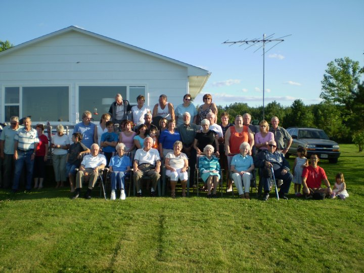
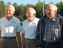

The Family Chronicle
No. 188 , 2010
____________________________________________________________________

Group Photo

Brothers Don, Ken and Norm Glendenning
Glendenning Reunion
Descendants of Elmer and Jane (Watling) Glendenning gathered for their 33rd consecutive annual family reunion on Saturday, July 31, 2010. The reunion was held in Point Aux Carr, at the cottage of Ken and Verne Glendenning. Among those present were descendants from Australia, Korea, Ontario and PEI.
My thanks to Donald Edge for the following and my apologies for not having published it sooner. Donald’s notes on the 1851 census appeared in Family Chronicle No. 160.
Glenelg Parish:
Name, History, 1840 Census
Glenelg in geography is one of the most common palindromes, a name that reads the same backwards and forwards. The original Glenelg in the highlands of Scotland is both a village and a mountainous peninsula and a bay in Ross-Shire that look across the Sound of Sleat to the Isle of Skye. This highland name Glenelg is said to derive from the Gaelic Gleann Seilg, the Glen of Hunting.
There are many other Glenelgs, including a Glenelg village and lake in Nova Scotia, and a Glenelg in Ontario. In the 1830's Lord Glenelg was England's Secretary of State for the Colonies; and his name commonly appears on Australian and New Zealand rivers and street signs. Our Glenelg Parish is "So named for the native place in Scotland of Major McDonald of the 78th Highlanders, a prominent resident who settled there about 1790."*
Originally a part of Newcastle Parish, the New Brunswick Northumberland County Parish of Glenelg was set up in 1814 and included Nelson, Hardwicke, and a small part of Rogersville. Hardwicke was set up in 1851 as a separate parish, and Rogersville set up in 1881. Glenelg took its final and present form in 1900.
In the 1840 Census the old Glenelg Parish had 237 houses sheltering 244 families; 11 houses were under construction [there were 281 houses in the 1851 Census]. The population was 1351--690 males and 661 females**; there were no residents "of Colour." There were 3828 cleared acres, and the community was served by 3 grist mills and 1 saw mill. There were four churches: 1 Church of England, 2 Presbyterian, and 1 Roman Catholic. People outnumbered churches, but people were far outnumbered by farm animals. There were 249 horses, 1155 "Neat Cattle," 943 sheep, and 852 swine. Poultry were probably too small to mention and too numerous to count.
Folks in Black River in palindromic Glenelg Parish were more forward than backward--all the folks I knew there were humorous and quick--and often quite contrary.
*Ganong, W.F. Additions and Corrections to Monographs on the Place-nomenclature, Cartography, Historical Sites, Boundaries and Settlement-origins of the Province of New Brunswick, in Proceedings and Transactions of the Royal Society of Canada. 2nd Series, Vol. XII (1906), p.25.
**While men age 16 and over outnumbered women age 16 and over in all parishes, Glenelg had a disproportionate number of females under age 16 - -389 vs. 272 males under age 16.
All census data taken from the web site "Charlotte Taylor Her Life and Times" at http://www3.bc.sympatico.ca/charlotte_taylor/Folder1/1840_Census.htm
Editor’s Notes
“The Major MacDonald” mentioned in paragraph 3 would be, I believe, an ancestor of Alex “Major” MacDonald who lived on the north side of Black River near the junction of the Point Aux Carr Road.
Grist Mill - According to my notes, a grant of 300m acres was made to George Fowlie on 1834-01-11; the history of Bay du Vin reports that Fowlie’s mill was operating in 1833. It was not unusual for people to work their grant before the paperwork was finished.
Neat - an Old English term that is no longer used meaning domesticated cattle. According to Wikipedia At one time, apparently there were three separate species, “Bos taurus, the European or "taurine" cattle (including similar types from Africa and Asia); Bos indicus, the zebu; and the extinct Bos primigenius, the aurochs”. . The last named were known as neat cattle.
Churches
- Presumably the original Presbyterian Church at Tucker’s Point in
Bay du Vin, the new St. Stephen’s Presbyterian Church in Black
River, a Church of England across the Bay du Vin river from
Tucker’s Point, and a Roman Catholic Church at Bayside (now
Miramichi).
______________________________________
The Family Chronicle (Copyright) is an occasional newsletter published by Don Glendenning and posted on the family website. It is intended to share information about my family, community and the times in which I grew up. While every effort is made to be accurate, errors are likely to occur. Comments, enquiries and information may be sent to 62 Queen Elizabeth Drive, Charlottetown, PEI, C1A 3A9. Tel: 902 892 5859. Email: don@glendenning.net Web: www.glendenning.net/don